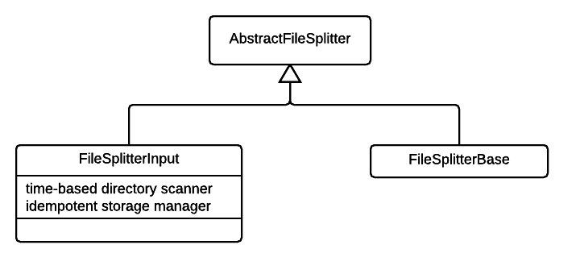
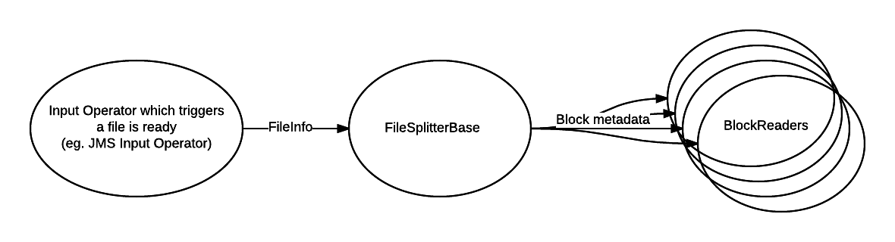
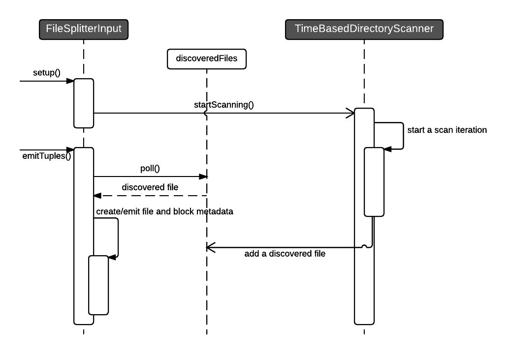

File Splitter
This is a simple operator whose main function is to split a file virtually and create metadata describing the files and the splits.
Why is it needed?
It is a common operation to read a file and parse it. This operation can be parallelized by having multiple partitions of such operators and each partition operating on different files. However, at times when a file is large then a single partition reading it can become a bottleneck. In these cases, throughput can be increased if instances of the partitioned operator can read and parse non-overlapping sets of file blocks. This is where file splitter comes in handy. It creates metadata of blocks of file which serves as tasks handed out to downstream operator partitions. The downstream partitions can read/parse the block without the need of interacting with other partitions.
Class Diagram

AbstractFileSplitter
The abstract implementation defines the logic of processing FileInfo. This comprises the following tasks -
-
building
FileMetadataper file and emitting it. This metadata contains the file information such as filepath, no. of blocks in it, length of the file, all the block ids, etc. -
creating
BlockMetadataIteratorfromFileMetadata. The iterator lazy-loads the block metadata when needed. We use an iterator because the no. of blocks in a file can be huge if the block size is small and loading all of them at once in memory may cause out of memory errors. -
retrieving
BlockMetadata.FileBlockMetadatafrom the block metadata iterator and emitting it. The FileBlockMetadata contains the block id, start offset of the block, length of file in the block, etc. The number of block metadata emitted per window are controlled byblocksThresholdsetting which by default is 1.
The main utility method that performs all the above tasks is the process() method. Concrete implementations can invoke this method whenever they have data to process.
Ports
Declares only output ports on which file metadata and block metadata are emitted.
- filesMetadataOutput: metadata for each file is emitted on this port.
- blocksMetadataOutput: metadata for each block is emitted on this port.
process() method
When process() is invoked, any pending blocks from the current file are emitted on the 'blocksMetadataOutput' port. If the threshold for blocks per window is still not met then a new input file is processed - corresponding metadata is emitted on 'filesMetadataOutput' and more of its blocks are emitted. This operation is repeated until the blocksThreshold is reached or there are no more new files.
protected void process()
{
if (blockMetadataIterator != null && blockCount < blocksThreshold) {
emitBlockMetadata();
}
FileInfo fileInfo;
while (blockCount < blocksThreshold && (fileInfo = getFileInfo()) != null) {
if (!processFileInfo(fileInfo)) {
break;
}
}
}
Abstract methods
-
FileInfo getFileInfo(): called from within theprocess()and provides the next file to process. -
long getDefaultBlockSize(): provides the block size which is used when user hasn't configured the size. -
FileStatus getFileStatus(Path path): provides theorg.apache.hadoop.fs.FileStatusinstance for a path.
Configuration
- blockSize: size of a block.
- blocksThreshold: threshold on the number of blocks emitted by file splitter every window. This setting is used for throttling the work for downstream operators.
FileSplitterBase
Simple operator that receives tuples of type FileInfo on its input port. FileInfo contains the information (currently just the file path) about the file which this operator uses to create file metadata and block metadata.
Example application
This is a simple sub-dag that demonstrates how FileSplitterBase can be plugged into an application. 
The upstream operator emits tuples of type FileInfo on its output port which is connected to splitter input port. The downstream receives tuples of type BlockMetadata.FileBlockMetadata from the splitter's block metadata output port.
public class ApplicationWithBaseSplitter implements StreamingApplication
{
@Override
public void populateDAG(DAG dag, Configuration configuration)
{
JMSInput input = dag.addOperator("Input", new JMSInput());
FileSplitterBase splitter = dag.addOperator("Splitter", new FileSplitterBase());
FSSliceReader blockReader = dag.addOperator("BlockReader", new FSSliceReader());
...
dag.addStream("file-info", input.output, splitter.input);
dag.addStream("block-metadata", splitter.blocksMetadataOutput, blockReader.blocksMetadataInput);
...
}
public static class JMSInput extends AbstractJMSInputOperator<AbstractFileSplitter.FileInfo>
{
public final transient DefaultOutputPort<AbstractFileSplitter.FileInfo> output = new DefaultOutputPort<>();
@Override
protected AbstractFileSplitter.FileInfo convert(Message message) throws JMSException
{
//assuming the message is a text message containing the absolute path of the file.
return new AbstractFileSplitter.FileInfo(null, ((TextMessage)message).getText());
}
@Override
protected void emit(AbstractFileSplitter.FileInfo payload)
{
output.emit(payload);
}
}
}
Ports
Declares an input port on which it receives tuples from the upstream operator. Output ports are inherited from AbstractFileSplitter.
- input: non optional port on which tuples of type
FileInfoare received.
Configuration
- file: path of the file from which the filesystem is inferred. FileSplitter creates an instance of
org.apache.hadoop.fs.FileSystemwhich is why this path is needed.
FileSystem.newInstance(new Path(file).toUri(), new Configuration());
The fs instance is then used to fetch the default block size and org.apache.hadoop.fs.FileStatus for each file path.
FileSplitterInput
This is an input operator that discovers files itself. The scanning of the directories for new files is asynchronous which is handled by TimeBasedDirectoryScanner. The function of TimeBasedDirectoryScanner is to periodically scan specified directories and find files which were newly added or modified. The interaction between the operator and the scanner is depicted in the diagram below.

Example application
This is a simple sub-dag that demonstrates how FileSplitterInput can be plugged into an application.
Splitter is the input operator here that sends block metadata to the downstream BlockReader.
@Override
public void populateDAG(DAG dag, Configuration configuration)
{
FileSplitterInput input = dag.addOperator("Input", new FileSplitterInput());
FSSliceReader reader = dag.addOperator("Block Reader", new FSSliceReader());
...
dag.addStream("block-metadata", input.blocksMetadataOutput, reader.blocksMetadataInput);
...
}
Ports
Since it is an input operator there are no input ports and output ports are inherited from AbstractFileSplitter.
Configuration
- scanner: the component that scans directories asynchronously. It is of type
com.datatorrent.lib.io.fs.FileSplitter.TimeBasedDirectoryScanner. The basic implementation of TimeBasedDirectoryScanner can be customized by users.
a. files: comma separated list of directories to scan.
b. recursive: flag that controls whether the directories should be scanned recursively.
c. scanIntervalMillis: interval specified in milliseconds after which another scan iteration is triggered.
d. filePatternRegularExp: regular expression for accepted file names.
e. trigger: a flag that triggers a scan iteration instantly. If the scanner thread is idling then it will initiate a scan immediately otherwise if a scan is in progress, then the new iteration will be triggered immediately after the completion of current one.
2. idempotentStorageManager: by default FileSplitterInput is idempotent.
Idempotency ensures that the operator will process the same set of files/blocks in a window if it has seen that window previously, i.e., before a failure. For example, let's say the operator completed window 10 and failed somewhere between window 11. If the operator gets restored at window 10 then it will process the same file/block again in window 10 which it did in the previous run before the failure. Idempotency is important but comes with higher cost because at the end of each window the operator needs to persist some state with respect to that window. Therefore, if one doesn't care about idempotency then they can set this property to be an instance of com.datatorrent.lib.io.IdempotentStorageManager.NoopIdempotentStorageManager.
Handling of split records
Splitting of files to create tasks for downstream operator needs to be a simple operation that doesn't consume a lot of resources and is fast. This is why the file splitter doesn't open files to read. The downside of that is if the file contains records then a record may split across adjacent blocks. Handling of this is left to the downstream operator.
We have created Block readers in Apex-malhar library that handle line splits efficiently. The 2 line readers- AbstractFSLineReader and AbstractFSReadAheadLineReader can be found here AbstractFSBlockReader.